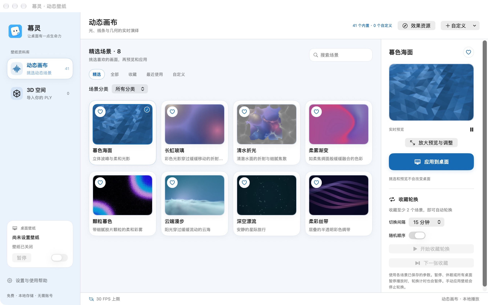

让桌面有一点生命力。
把流光、粒子与立体空间带到桌面。先挑选和预览，满意后再应用；让喜欢的画面陪你慢慢工作。
免费 · 无需账号 · 无内购与订阅 · macOS 14 及以上
首发版本已提交 Apple 审核，下载与供应状态以 App Store 页面为准。应用界面为简体中文。

挑选一幅动态画布
41 款随包离线场景，涵盖柔和光影、自然星空、几何线条与粒子流体。调色、速度、密度和亮度按场景保存。
喜欢，就留在收藏
分类、关键词与最近使用，让下一次寻找更轻松。收藏至少 2 个场景后，可主动开启定时顺序或随机轮换。
给自己的作品一个位置
导入本地 3DGS PLY，或编写离线 HTML、CSS、JavaScript 场景。数据保留在这台 Mac，不需要注册或上传作品。
专注时，懂得安静
自动、节能与画质优先模式，可选全屏、桌面不可见和电池供电时暂停。休眠时停止播放，默认遵循系统“减少动态效果”。
实际资源占用取决于场景、分辨率和设备；不承诺零耗电。
桌面仍然是你的桌面
挑选和编辑只改变预览。明确点击“应用到桌面”后才更换；退出应用或关闭壁纸即可露出原系统壁纸。
当前所有显示器使用同一画面；不支持视频壁纸或替换锁屏。本应用不包含独立屏保插件，也不生成 3D 模型。
About Muling
Muling is a local-first live wallpaper app for macOS 14 and later. Explore 41 bundled scenes, personalize their appearance, rotate favorites, import local 3D Gaussian Splatting PLY files, or create offline HTML/CSS/JavaScript artwork. No account, ads, subscription, or in-app purchases. The app interface is in Simplified Chinese. See our English privacy summary and support guide.